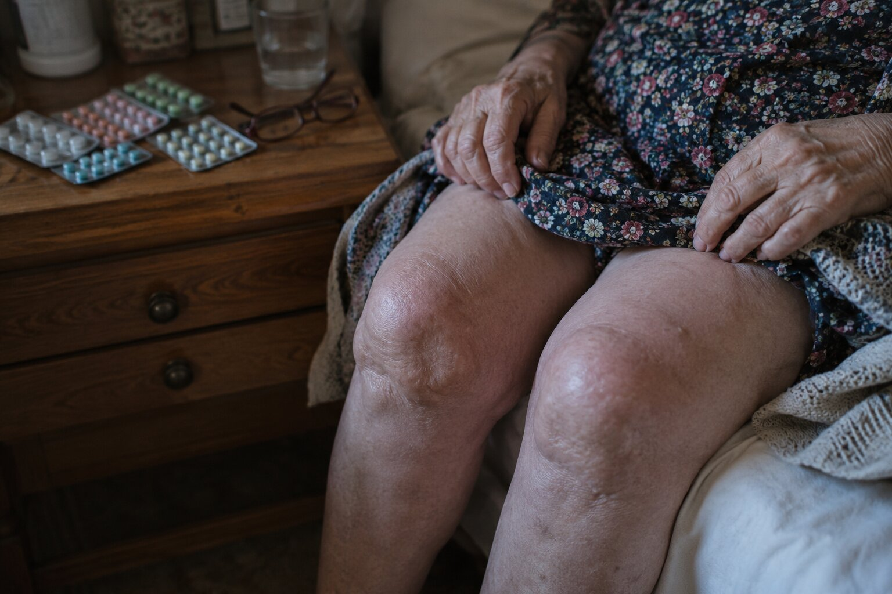

Във вторник сутринта стигнахме до Гела, в долините под върховете. Мъглата още висеше между баирите. Последните километри изминахме пеша, защото по-нататък няма асфалт. „Дядо Стоян ли търсите?" — попита ни възрастна жена в края на селото, с черна забрадка. „Свийте наляво, покрай каменната черквица. Къщата му е до чешмата. Ама побързайте, че към обед тръгва нагоре по билки."
Така намерихме Стоян Караджов — 75-годишен билкар, прекарал целия си живот в Родопите, който днес събаря едно от най-големите табута в страната: че срещу паразитите има истинско решение. Решение, което не минава през химически хапчета, инжекции или операции. А през срещата на природата, старото знание и паметта на вековете.
В околните места — в Гела, в Момчиловци, в Широка лъка и другаде — почти всяко семейство познава дядо Стоян. Дъщери водят майките си, които гаснат пред очите им. Жени поръчват кутии за мъжете си, които от години се оплакват от стомах. Мъже идват след дълги дни работа, за да си върнат силата. Личният лекар в общината признава: „Не мога да обясня какво става с този човек. Но моите пациенти наистина оздравяват."

„Тялото знае всичко. Трябва само да усмириш шума, за да чуеш какво шепне." Разговор с дядо Стоян в сърцето на Родопите — в къщата му, където по стените висят вързопи сухи билки, а по полиците лежат книги на стотици години
Дядо Стоян Караджов: „Помня всичко, като че беше вчера. Ранна утрин, мъглата още висеше между баирите. Седях пред колибата си, до огъня, и приготвях билкова смес — тогава я правех за добитъка си. Изведнъж чух бавни стъпки. Появи се жена, в тъмна рокля до земята, на около шейсет години. Очите ѝ бяха като застояла вода — пълни със страх. Седна до мен на един паднал дънер и каза:
„Дядо Стояне, моля те, спаси мъжа ми. Мъжът ми гасне. Слабее от месец на месец, подува се след всяко ядене, нощем скърца със зъби. Лекарите не могат да направят нищо. Всички изследвания му излизат добри. Няма сила дори да стане от стола. Само лежи и плаче."
В ТОЗИ МИГ РАЗБРАХ: БИЛКОВОТО ЗНАНИЕ, КОЕТО НАСЛЕДИХ ОТ УЧИТЕЛЯ СИ, НЕ МИ Е ДАДЕНО САМО ЗА МЕН — А И ЗА ТАЗИ ЖЕНА, И ЗА НЕЙНИЯ МЪЖ. ТОГАВА РЕШИХ ДА ГО ПРЕДАМ НАТАТЪК."

Дядо Стоян говори бавно, понякога с дълги паузи — сякаш претегля всяка дума поотделно. Големите му костеливи ръце почиват на коленете. Пръстите му са изцапани от смоли и корени, с които работи цял живот. Зад него, на стената, висят сухи вързопи пелин и вратига. По полиците стоят буркани, малки тъмни съдове и една тежка книга, подвързана с кожа — италиански билкарник на стотици години, наследен от учителя му.
„Хората мислят, че паразитите са приказка от времето на дедите. Лъжа е. Погледни овца с глисти: слабее, макар да пасе, руното ѝ загрубява, няма сила. Всеки овчар знае какво ѝ е и я чисти два пъти в годината. Ама когато същото се случва с човека, никой не поглежда натам. Днешната медицина не търси паразити. Само приспива признака. И всяка година дава още хапчета. Докато човекът угасне съвсем."
„Аптеките не казват истината — защото, ако я кажат, ще фалират" Дядо Стоян Караджов обяснява защо обикновените хапчета за обезпаразитяване правят повече вреда, отколкото полза
Дядо Стоян Караджов:
— Чакай да ти кажа какво виждам от месец на месец при тези, които идват при мен. Жена на шейсет и пет години. От десет години пие хапчета за стомах. Подуването се влошава всяка година. Сега я боли и черният дроб от толкова лекарства. Изследванията на бъбреците ѝ излизат лоши. Лекарят ѝ предписва още едно хапче — сега за черния дроб. После за бъбреците. А паразитите междувременно си вършат работата. Тях никой не ги вади. Само се приспива признакът — докато тялото остане без сила.
Това е порочният кръг: подуване → хапче → признакът се връща по-силен → по-силно хапче → стомахът страда → още едно хапче за стомаха → черният дроб отказва → а паразитите междувременно се множат. Никой не казва истината: има друг път — да извадиш от тялото това, което не е негово, и после да го оставиш само да се възстанови.

Подуването, умората, кожата и „нервите" след четирийсет и пет години не са „нормални за възрастта" — те са знак, че тялото храни някой друг. Който приспива този знак с хапчета, оставя бавно и мълчаливо собственото си тяло да бъде изядено отвътре.

Обикновените хапчета само блокират признака, докато паразитите мълчаливо си вършат работата. Без истинско изчистване тялото се изпразва от сили година след година — и тогава остават само две възможности: да свикнеш да живееш така, или да потърсиш другаде. Нито една не ти връща живота сама.
Дядо Стоян Караджов:
— Разберете колко е сериозно. При мнозина от тези, които идват при мен, тялото носи паразити от десет, петнайсет години. Ядат и не се насищат. Спят и не си почиват. Всеки ден е битка, която не виждат. А хапчето от аптеката удря един вид, два — и остават още десетки. Човекът го изпие, две седмици му е по-добре, после всичко се връща, и тогава казва: „Че какви паразити, аз нали се лекувах." ОБИКНОВЕНИТЕ ХАПЧЕТА НЕ МОГАТ ДА ИЗЧИСТЯТ ТЯЛОТО — САМО ПРИСПИВАТ ПРИЗНАКА, ДОКАТО ВСИЧКО ПРОДЪЛЖАВА!
И знаете ли кое ме боли най-много в гърдите? Че тези хора са сами. Децата им заминаха в Германия, в Испания, в Италия, в Англия. Аптеката им носи лекарства веднъж седмично. Лекарят ги вижда веднъж годишно. А междувременно те гаснат мълчаливо. Стомах, кожа, сън. Излизат им брадавички по врата и им казват, че е от годините. След време ги е страх и от къщи да излязат. Затова правя това, което правя.
Истории, които никога няма да забравя — и истории, които ще променят начина, по който гледате на силата на природата
Дядо Стоян Караджов:
— Оставете ме да ви кажа кого виждам всяка седмица. Не говоря за статистики. За хора. За хора с имена, които имат семейство, които имат своите истории. За хора, които медицината вече е отписала — но които природата още не е отписала.


Ето как изглеждат паразитите у човека. Това са признаците, които виждам най-често — и които милиони българи отдават на възрастта, на стреса или на храната:
- Умора, която не минава — спиш осем часа и се събуждаш все така изцеден;
- Подуване, газове и тежест в стомаха след ядене — „като че вътре ври нещо";
- Запек и разстройство, които се редуват без причина;
- Обриви, сърбеж и „алергии" от нищото — а по врата и под мишниците започват да излизат брадавички и папиломи;
- Неудържим глад за сладко и тестено;
- Скърцане със зъби насън и събуждане към три през нощта;
- Анемия и недостиг на желязо, които не се оправят и с хапчета;
- Тъмни кръгове, бледа кожа, чупливи коса и нокти;
- Сърбеж в областта на ануса, особено нощем;
- Раздразнителност, „нерви", мъгла в главата, слаба концентрация;
- Чести настинки и инфекции, една след друга;
Всеки от тези признаци е тревога. А след четирийсет и пет години пренебрегването им води към един-единствен край: ХРОНИЧНА ИНТОКСИКАЦИЯ НА ОРГАНИЗМА, ИМУНИТЕТ НА ЗЕМЯТА, РАЗРУШЕНИ ЧЕРЕН ДРОБ И ЧЕРВА — И ТЯЛО, КОЕТО ОТ ГОДИНА НА ГОДИНА НОСИ ВСЕ ПО-ТРУДНО.
Всеки ден, прекаран с паразити в тялото, ви приближава до това! Хиляди български пенсионери гаснат именно защото са пренебрегнали признаците — или защото са пили само хапчета, които не решиха проблема. Направете нещо сега — за себе си или за близките си — докато не е станало късно!
„Учителят ми ме научи: за всяка мъка природата има отговор — ако знаеш къде да търсиш" Как дядо Стоян Караджов намери рецептата, която днес използват над 2000 души от родопските села
Дядо Стоян Караджов:
— На другия ден отидох да видя мъжа на онази жена. Къщата беше в полумрак. Човекът приличаше на изсъхнала гъба — слаб, жълтеникав. Тялото още топло, а погледът вече се сбогуваше със света. Седнах до него, хванах го за ръката и го попитах: „От колко години живееш така, брате?" Замълча. По бузата му се търколи сълза. „От деветнайсет години" — прошепна. „И никой не знае как да ми помогне. Всички само ми пишат рецепти."
Тогава си спомних една стара бележка. Преди години бях намерил забравен том сред нещата, останали от учителя ми — италиански билкарник от шестнайсети век, превод на „De Materia Medica" на великия Диоскорид. На една страница пишеше: „Онзи, който се храни скришом в човешките черва, му отнема едно по едно цвета, съня и силата, а човекът мисли, че са годините. Само този, който познава горчивината на билката, може да го изкара навън — и чак тогава тялото си спомня как се живее."

Разбира се, това не беше научно обяснение — а мъдрост, носена от коляно на коляно. Но тогава сглобих нещата: какво пишеше в книгата, какво ми беше оставил учителят ми и какво виждах с очите си година след година по добитъка, който овчарите чистят. Рецептата беше там, на страницата, само че от сто години никой не я беше чел за хора. Направих първата смес за онзи човек — и от него започнаха две години работа. Две години, в които премервах билките една по една, докато уцелих пропорциите, при които мъката не се връщаше. Това е билката, която хората днес познават под името Parazol: същите билки от книгата, набрани на ръка и сложени в кутии, без нито едно химическо хапче.
Какво съдържа билката, която прави дядо Стоян:
- Планински пелин (Artemisia absinthium) — горчивината, която прогонва Пелинът — най-известната лечебна билка за изкарване на паразитите от червата. Българската народна медицина го използва от векове: горчивината му прави така, че възрастните паразити да не могат повече да се държат за стената на червото
- Вратига (Tanacetum vulgare) — горчива лечебна билка Действа силно и върху паразитите в червата, и върху яйцата им — там, където други билки не стигат
- Карамфил — заради евгенола в него Унищожава яйцата и ларвите — точно това, което другите билки не могат. Без тази стъпка всичко започва отначало след няколко седмици
- Кора от черен орех (Juglans nigra) Чисти червата и помага на тялото да изкара навън всичко отлепено — черният дроб и червата работят по-леко
- Тиквени семки (Cucurbita) Действат меко и успокояват лигавицата на червото — както казваше учителят ми: „билката, която лекува мястото, след като си го изчистил"
Тези билки дядо Стоян и помощниците му берат по склоновете на планината в продължение на шест седмици — веднъж в годината, само когато са в пълна сила. Пропорциите е усвоил от учителя си, а всяка стъпка прави със собствените си ръце.
Така се роди Parazol — правен на ръка, от най-добрите лечебни билки на Родопите
Дядо Стоян Караджов:
— Не се ражда в лаборатория. Ражда се в моята работилница, тук, в полите на планината. Пелина и вратигата берем аз и помощниците ми — горе, по слънчевите склонове, където билката има най-много сила. Останалите билки събираме пак тук, по стръмнините. Беритбата ни отнема шест седмици, защото всяка билка трябва да се отреже точно в деня, в който е узряла. После правим билката на малки количества и я слагаме в кутии на ръка. За един ден можем да направим най-много 70 кутии — не повече, защото инак ще се развали качеството.


В основата на билката стои рецепта на четиристотин години, оставена от учителя ми. На днешен език: концентрираните билки стигат там, където всъщност живеят паразитите — в стената на червото, в черния дроб и в жлъчните пътища —, тоест точно на мястото, което обикновеното хапче едва докосва мимоходом. Действието е пет пъти по-силно от която и да е смес, взета от рафта, защото природата знае точно как да работи с човешкото тяло. А предимството пред хапчетата е, че работи по целия път на храната наведнъж — стомах, черва, черен дроб, жлъчка — без силна химия, която да удари черния дроб и бъбреците. За възрастни хора, които живеят сами, това означава спокойствие и никаква допълнителна грижа.
Parazol не иска да се надпреварва с никого. Иска само да помогне. Всяка билка — в точната си пропорция — прави едно-единствено нещо: една прогонва възрастните паразити, друга унищожава яйцата им, трета чисти тялото от останалото, четвърта успокоява червото. Само четирите заедно правят така, че проблемът да не се върне. И най-важното: действа и на 70, и на 80, и на 85 години! Първите ми болни бяха най-старите — хора, които вече всички бяха отписали.
Дядо Стоян Караджов:
— Първата жена, на която дадох тази билка, не беше ставала от леглото четири месеца. Беше леля Митра от Широка лъка. На третия ден сама влезе в кухнята и ми свари кафе — не защото за три дни беше оздравяла, а защото ѝ беше минала тежестта в корема и беше спала цяла нощ. Останалото дойде бавно, седмица след седмица. И двамата плакахме. Тя — защото за пръв път от много години не ѝ призляваше след всяка хапка. Аз — защото в този миг разбрах, че наследството на учителя ми живее. Че не съм работил напразно всичките тези години.
По четири начина Parazol ви помага да изчистите тялото си и да си върнете силата — на всяка възраст
Възрастният паразит, яйцата, които оставя след себе си, и отровите в изцеденото тяло са три различни неща — затова едно хапче не може да извади всичко наведнъж. Четирите работи на билката Parazol:
- Прогонване на възрастните паразити Още от първите дни на курса пелинът и вратигата правят така, че възрастните паразити да не могат да се държат за стената на червото, и тялото ги изкарва навън по естествен път. Не се приспива признакът (както правят обикновените хапчета за стомах) — изважда се причината.
- Унищожаване на яйцата и ларвите Тук се провалят почти всички курсове: възрастните паразити си отиват, но яйцата остават, и след няколко седмици всичко започва отначало. Евгенолът от карамфила стига и до яйцата, и до ларвите. Тази стъпка се случва в 7-10 ден от курса.
- Изчистване на тялото от отровите Кората от черен орех и тиквените семки помагат на черния дроб и червата да изкарат навън всичко останало. Затова през втората и третата седмица се успокояват сърбежът и обривите по кожата, вдига се мъглата от главата и започват да се връщат силите.
- Възстановяване на червото и на силите Курсът трае четири седмици и трябва да се докара докрай. Първите промени се усещат бързо — за два-три дни минава подуването и се спи различно. Но истинският резултат идва постепенно: чак към края на курса лигавицата на червото се успокоява и храната започва пак да храни тялото, а не някой друг. Тогава се връщат спокойният сън, цветът на лицето и желанието за живот. Един курс е достатъчен. Само при мъки, стари от десет-петнайсет години, трябва още един.
Истории, които дядо Стоян разказва сам — за хора, които пак стъпиха на краката си
Дядо Стоян Караджов:
— Оставете ме да ви разкажа за неколцина от тези, които виждам всяка седмица. Хора, на които никой вече не даваше никакъв шанс — нито лекарите, нито семейството. Хора, които днес живеят отново.

Леля Митра, 82 години, Широка лъка. Четири месеца не беше ставала от леглото. В първите дни с Parazol ѝ мина подуването и спа цяла нощ; на третия ден сама направи няколко крачки из къщи. Силата се върна бавно, а на края на четириседмичния курс излиза в двора без чужда помощ. „Никой не очакваше това. И аз самата не. Дядо Стоян идва веднъж седмично. Само ме поглежда, пита ме как съм спала и кимва."
Резултат след 30 дни: Ходи сама, изчезна подуването, спи цяла нощ и се храни без страх.
Дядо Костадин, 70 години, пенсиониран миньор от Мадан. Подуване, „гастрит", раздразнено черво — не можеше да седне на трапезата със своите, без да се подуе. Мъката беше стара трийсет години, затова изкара и втори курс след първия. На месец и половина се върна в градината си и обработва по две лехи на EUR „Мислех, че стомахът ми е развален завинаги. Бях готов да се примиря. Излъгах се. С билката на дядо Стоян се чувствам с двайсет години по-млад."
Резултат след 45 дни: Изчезна тежестта в стомаха, върна се апетитът, а за пръв път от много години спи дълбоко цяла нощ.Защо Parazol го няма в аптеките? И как може да се поръча?
Дядо Стоян Караджов:
Честно казано, правенето на Parazol е тежка и бавна работа. Билките са редки — планинският пелин се бере само горе, по слънчевите склонове, останалите на ръка, по стръмнините, а имаме прозорец от само шест седмици в годината, когато билките са в пълна сила. За един ден можем да направим най-много 70 кутии в моята работилница. Не можем да угодим на всички.
Ще минат поне още 2-3 години, докато Parazol стигне до аптеките. Дотогава се намира в цялата страна само през интернет, в програми за подкрепа, които се отварят два пъти в годината. Отстъпката може да стигне до 50% — което е много важно за българските пенсионери по селата, които живеят с пенсия от около 350 евро на месец.
Когато аптеките разбраха, че тази билка наистина работи — дори при хора, които носеха мъката от десет-петнайсет години — поискаха да вземат 156 евро за кутия. Казах им: „Не работя за пари. Учителят ми ми даде даром всичко, което знаеше. Няма да обирам българските пенсионери." Аптеките ме отказаха. Няколко дни по-късно започнаха да идват при мен хора от здравната инспекция. Искаха документи. Искаха да ме глобят. Ама не спрях. Тогава в живота ми се появи един младеж от София. Майка му бях изчистил три години по-рано от стара стомашна мъка, която никой не можеше да развърже — аз бях забравил отдавна и него, и нея. Сега се върна. Каза ми: „Дядо Стояне, ти тук, в планината, правиш чудеса с ръцете си. Ама в България има хиляди хора, които страдат и които никога няма да стигнат дотук. Остави ме да помогна." Той направи така, че билките, приготвени с моите сечива, да се слагат в чисти кутии, в чиста работилница, куриерска служба да ги разнася из цялата страна, а малък екип да отговаря на телефоните. Аз продължавам да правя билката тук, със своето темпо. Той се грижи само тя да стига до онези, които имат нужда от нея.
Моля ви: НЕ ПРОПУСКАЙТЕ ТАЗИ ПРОГРАМА! Не само заради себе си — а и заради родителите, заради дядовците и бабите, заради близките роднини, които може би страдат мълчаливо. Или заради онези, които вече са в старчески дом, сами, и на които никой нищо не праща. Бъдете вие този, който прави разликата.
За поръчка използвайте формуляра по-долу.
Последен шанс да вземете Parazol тази година — за себе си или за някой близък, който страда мълчаливо

Дядо Стоян Караджов:
— Заделих 20 000 кутии, събирани партида по партида през цялата година, само за читателите на този портал. Всеки български гражданин над 40 години може да получи отстъпка от 50%, но програмата приключва .
Не чакайте, докато вече не можете да хапнете нищо, без да се подуете. Докато нощем кожата ви пламне така, че да не можете да спите. Докато нямате сила да излезете от къщи. И най-вече — не чакайте, докато не станете „товар" за близките си. Един курс изважда от тялото това, което не е негово — и от този миг тялото само си върши работата нататък. Без доживотно лечение, без химически хапчета, без мъка, която се връща. Една крачка, и тялото ви ще си спомни как се живее.
Напишете името и телефонния си номер. Консултант ще ви потърси, ще подбере подходящата програма и ще уреди доставка за 2-3 дни с куриер, направо на вашия адрес, навсякъде в България.
С обич и грижа — дядо Стоян Караджов. Пазете близките си. Може би единственото, от което имат нужда, е да знаят, че не са забравени.
Обновено: : Предвид огромния интерес, наличностите може да свършат по-бързо от предвиденото! Днес — — е последният ден от програмата или до изчерпване на наличностите.
Внимание! Не затваряйте и не презареждайте страницата, инак вашата кутия Parazol ще бъде предложена на друг човек!
Може да участвате в офертата — вашето място е запазено: Nº 19 974
направо на посочения от вас адрес

КОМЕНТАРИ
Биляна Кирова
Преди 2 часа
Плаках, докато четях това. Майка ми е на 76 години, от две години е в дом в Кърджали — точно защото отслабна дотам, че вече не можеше сама из къщи. Всички лекари казваха, че е от възрастта. Това е най-голямата ми вина. Поръчах Parazol за нея. Дано не е късно. Дай Боже да подейства.
Веселина Николова
Преди 5 часа
Миналия петък получих Parazol. Пия го сутрин и вечер, както пише на кутията. За 5 дни — подуването намаля много, мога да изям една супа, без да се надуя като бъчва! Историята на дядо Стоян ме убеди да поръчам. Изключителен човек, наистина.
Снежана Петрова
Преди 8 часа
На 69 години съм. Четири години се мъчих със стомаха — „гастрит", „раздразнено черво", както си решиха да го нарекат. Лекарите ми дадоха хапчета, които ми развалиха стомаха още повече. След 3 седмици с Parazol — тежестта почти изчезна. Ходя сама на пазара, готвя. Върнах си живота, слава Богу.
Георги Тодоров
Преди 12 часа
Работя по 10 часа на ден в офис в София. От две години бях смазан от умора и ми излезе обрив по цялото тяло. Лекарят ми каза: „От стреса е, пийте витамини." На края на курса — ни следа. И огромно уважение към дядо Стоян — в свят, в който всички искат пари, той ходи пеша при забравени старци в планината.
Лиляна Иванова
Преди 14 часа
Честно казано, не вярвах. Толкова реклами има в интернет, че си изгубих доверието. Прочетох тази статия само защото свекърва ми вече не можеше да хапне нищо, а аз бях отчаяна. Поръчах с мисълта „ако не подейства, губя 39 евро". Минаха 3 седмици. Вчера свекърва ми яде на масата с нас, като хората! Свекърва ми! Която от 8 месеца кълвеше по две лъжици и ставаше от масата. Сега не знам какво да кажа. Пиша заради онези, които като мен се съмняват.
Драгомир Митев
Преди 16 часа
Поръчах 3 кутии — за мен, за жена ми и за тъста ми, който е в дом. Не можем да го посещаваме често, поне да му пращаме каквото му трябва. Дано и на него подейства. Благодаря за тази статия.
Даниела Русева
Преди 18 часа
Все се питам дали да поръчам за баща ми. От 3 години е в дом — отслабна много и вече почти нищо не яде. Нищо не го интересува, едва говори. Мислите ли, че Parazol може да помогне и на 78 години?
Гергана Иванова
Преди 17 часа
Даниела, майка ми е на 82 години! Години наред не хапваше нищо, без да се подуе, беше станала кожа и кости, не ставаше от леглото. Изкара четириседмичния курс, а сега, на два месеца, излиза сама в двора. Не преувеличавам. И най-хубавото: когато я посетих, ме чакаше права, на вратата! Плакахме заедно. Поръчай без да се двоумиш, баща ти заслужава един шанс.
Здравко Сандев
Преди 15 часа
Даниела, поръчай спокойно. На 78 години съм и бях на крачка да не стана вече от фотьойла — бяха ме изцедили подутият корем и безсънните нощи. Мъката я носех от години, затова изкарах два курса един след друг. Parazol ме вдигна на крака. Буквално. Баща ти заслужава повече от старчески дом.
Елена Ангелова
Преди 20 часа
От седмица пия билката. Сутрин вече не се събуждам като пребита. Ям и не се подувам, а сърбежът по ръцете мина. Папиломите по врата, които имам от три години и за които лекарят ми каза „от възрастта е", сякаш са се смалили — чакам да довърша курса и ще ви кажа. Поръчах и за съседката ми, на 73 години е и живее сама.
Сузана Велева
Преди 1 ден
Признавам — четох тази статия с недоверие. Имам опит с продукти, които обещават всичко. Ама историята на дядо Стоян ме спечели и реших да опитам, защото стомахът ме мъчеше от 5 години. След един месец — мога да копая в градината! Не казвам, че е чудо. Казвам, че работи. Дайте му шанс.
Тодорка Ганева
Преди 1 ден
На 82 години съм. Миналата година нямах сила и до кухнята да стигна. Децата говореха да ме сложат в дом. Опитах Parazol — без големи надежди. И РАБОТИ!!! Ям, спя, обличам се сама, сама стигам до портата. Децата вече не споменават дома. Това е най-голямата ми радост.
Ненчо Павлов
Преди 1 ден
Жена ми гаснеше от месец на месец — слабееше, не спеше, скърцаше със зъби цяла нощ. Мислех, че я губя — не от някаква болест, а от изтощение. Поръчах Parazol с отстъпка. След 4 седмици — вчера сама отиде на пазара и се върна с цветя. С цветя! Благодаря от сърце.
Ясмина Кръстева
Преди 1 ден
Поръчах четири кутии — за мама (в дома), за татко (пак там) и две за мен и за сина ми, че и двамата имаме същите мъки със стомаха. Историите от статията ме докоснаха. Вече нямам оправдания.
Силвия Георгиева
Преди 2 дни
Получих Parazol — куриерът го достави за 2 дни! Вече занесох кутията на мама, в дома. Имам надежда в сърцето. Пращам тази статия и на персонала там — може да се обадят на дядо Стоян.
Ивайло Лазаров
Преди 2 дни
Търсих Parazol по аптеките — никой го няма. Казаха ми, че трябва да се поръча от тази страница. Дано още има. На дядо ми му трябва спешно — на 81 години е и вече почти нищо не яде.